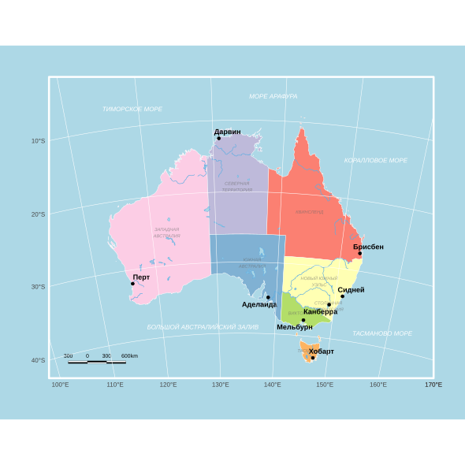

Linking to GEOS 3.13.1, GDAL 3.11.4, PROJ 9.7.0; sf_use_s2() is TRUElibrary(ggplot2)
library(ggrepel)
# ПОДГОТОВКА ДАННЫХ -
path <- "D:/users/platt/shapefile/auxiliary/naturalearth/5.1.2"
states_all <- ursa::spatial_read(file.path(path, "10m_cultural", "ne_10m_admin_1_states_provinces.shp"))
rivers_all <- ursa::spatial_read(file.path(path, "10m_physical", "ne_10m_rivers_lake_centerlines.shp"))
lakes_all <- ursa::spatial_read(file.path(path, "10m_physical", "ne_10m_lakes.shp"))
sf_use_s2(FALSE)Spherical geometry (s2) switched offru_names_map <- c(
"New South Wales" = "НОВЫЙ ЮЖНЫЙ\nУЭЛЬС", "Victoria" = "ВИКТОРИЯ",
"Queensland" = "КВИНСЛЕНД", "South Australia" = "ЮЖНАЯ\nАВСТРАЛИЯ",
"Western Australia" = "ЗАПАДНАЯ\nАВСТРАЛИЯ", "Tasmania" = "ТАСМАНИЯ",
"Northern Territory" = "СЕВЕРНАЯ\nТЕРРИТОРИЯ", "Australian Capital Territory" = "СТОЛИЧНАЯ\nТЕРРИТОРИЯ"
)
# Проекция Австралии (EPSG:3112)
aus_states <- st_transform(states_all[states_all$admin == "Australia" & states_all$name %in% names(ru_names_map), ], 3112)
aus_boundary <- st_union(aus_states)
aus_rivers <- st_intersection(st_transform(rivers_all, 3112), aus_boundary)Warning: attribute variables are assumed to be spatially constant throughout all geometriesWarning: attribute variables are assumed to be spatially constant throughout all geometriesWarning: st_centroid assumes attributes are constant over geometriesstate_labels$name_ru <- ru_names_map[state_labels$name]
cities <- data.frame(
name = c("Дарвин", "Перт", "Аделаида", "Мельбурн", "Канберра", "Сидней", "Брисбен", "Хобарт"),
lat = c(-12.46, -31.95, -34.93, -37.81, -35.28, -33.87, -27.47, -42.88),
lon = c(130.84, 115.86, 138.60, 144.96, 149.13, 151.21, 153.03, 147.32)
)
cities_sf <- st_transform(st_as_sf(cities, coords = c("lon", "lat"), crs = 4326), 3112)
# Линейка
scale_x <- -2700000
scale_y <- -4950000
h <- 20000
# Рисуем
final_plot <- ggplot() +
# Слои геометрии (рисуются первыми, окажутся под сеткой)
geom_sf(data = aus_states, aes(fill = name), color = "white", linewidth = 0.2) +
geom_sf(data = aus_lakes, fill = "#add8e6", color = "#5dade2", linewidth = 0.2) +
geom_sf(data = aus_rivers, color = "#5dade2", linewidth = 0.3) +
# Названия штатов и морей
geom_sf_text(data = state_labels, aes(label = name_ru), color = "#666666", size = 2.0, fontface = "italic", alpha = 0.6) +
annotate("text", x = -1700000, y = -1000000, label = "ТИМОРСКОЕ МОРЕ", color = "white", fontface = "italic", size = 2.8) +
annotate("text", x = 500000, y = -800000, label = "МОРЕ АРАФУРА", color = "white", fontface = "italic", size = 2.8) +
annotate("text", x = 2100000, y = -1800000, label = "КОРАЛЛОВОЕ МОРЕ", color = "white", fontface = "italic", size = 2.8) +
annotate("text", x = 2200000, y = -4500000, label = "ТАСМАНОВО МОРЕ", color = "white", fontface = "italic", size = 2.8) +
annotate("text", x = -600000, y = -4400000, label = "БОЛЬШОЙ АВСТРАЛИЙСКИЙ ЗАЛИВ", color = "white", fontface = "italic", size = 2.8) +
# Города
geom_sf(data = cities_sf, color = "black", size = 1.5) +
geom_text_repel(data = as.data.frame(st_coordinates(cities_sf)), aes(x = X, y = Y, label = cities$name),
color = "black", fontface = "bold", size = 3.2, box.padding = 0.3) +
# и тут линейка
annotate("rect", xmin=scale_x, xmax=scale_x+300000, ymin=scale_y-h, ymax=scale_y, fill="black", color="black", linewidth=0.1) +
annotate("rect", xmin=scale_x+300000, xmax=scale_x+600000, ymin=scale_y-h, ymax=scale_y, fill="white", color="black", linewidth=0.1) +
annotate("rect", xmin=scale_x+600000, xmax=scale_x+900000, ymin=scale_y-h, ymax=scale_y, fill="black", color="black", linewidth=0.1) +
annotate("rect", xmin=scale_x, xmax=scale_x+300000, ymin=scale_y, ymax=scale_y+h, fill="white", color="black", linewidth=0.1) +
annotate("rect", xmin=scale_x+300000, xmax=scale_x+600000, ymin=scale_y, ymax=scale_y+h, fill="black", color="black", linewidth=0.1) +
annotate("rect", xmin=scale_x+600000, xmax=scale_x+900000, ymin=scale_y, ymax=scale_y+h, fill="white", color="black", linewidth=0.1) +
annotate("text", x = seq(scale_x, scale_x + 900000, by = 300000), y = scale_y + h + 80000,
label = c("300", "0", "300", "600"), size = 2.4, color = "black") +
annotate("text", x = scale_x + 1030000, y = scale_y + h + 80000, label = "km", size = 2.4, color = "black") +
scale_fill_brewer(palette = "Set3", guide = "none") +
# настройка сетки
coord_sf(
xlim = c(-3000000, 3000000),
ylim = c(-5200000, -500000),
datum = st_crs(4326), # Принудительно используем градусы WGS84 для сетки
expand = FALSE,
clip = "off"
) +
theme_minimal() +
theme(
# Голубой фон моря на всю картинку
plot.background = element_rect(fill = "#add8e6", color = NA),
# Рамка карты
panel.background = element_rect(fill = NA, color = "white", linewidth = 1.2),
# тут перенос сетки на передний план
panel.ontop = TRUE,
panel.grid.major = element_line(color = "white", linetype = "solid", linewidth = 0.25),
panel.grid.minor = element_blank(),
# Настройка подписей осей
axis.text = element_text(color = "#444444", size = 8, face = "bold"),
axis.text.x = element_text(margin = margin(t = 15)), # Отступ снизу
axis.text.y = element_text(margin = margin(r = 15)), # Отступ слева
axis.title = element_blank(),
# Поля вокруг всего изображения, чтобы вынесенный текст не обрезался
plot.margin = margin(40, 40, 40, 40)
)
null device
1